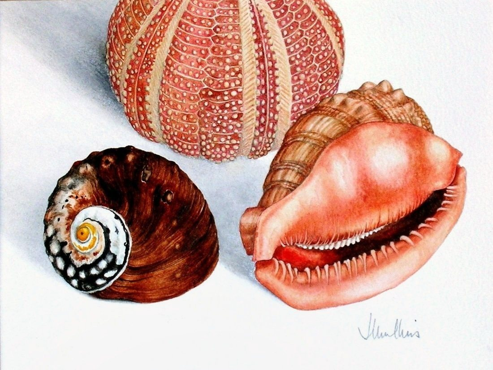

Three Shells
No. 141- Medium
- Watercolour on paper
- Size
- 20 × 26 cm
- Price
- Not for sale
[A few lines from Joan about this painting]

[A few lines from Joan about this painting]

The painting is shown at its real size, 20 × 26 cm, beside an armchair about 80 cm high. The room is an illustration.